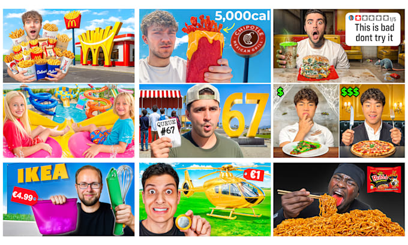
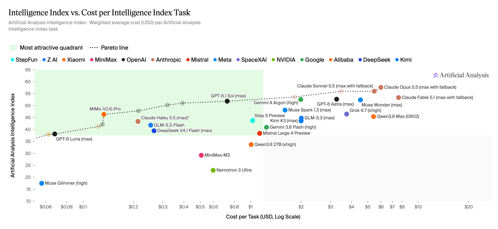
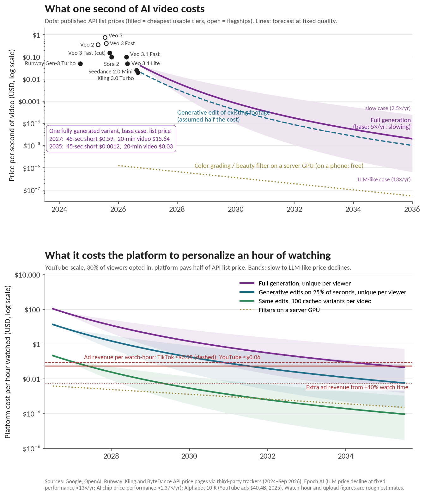

If you thought they were addictive now, just wait.
Content creators have gotten really good at optimizing their videos thanks to the hyper-competitive market that is TikTok, Instagram Reels, and YouTube. They know just when to cut to a new scene with the best transition, how to intonate their voice (just watch MrBeast's videos and notice his voice), the best thumbnails (again, see MrBeast), the optimum length, etc.
Companies have also gotten really good at maximizing engagement. They know user preferences better than the users themselves, from colors to video order to video length to topic and so on. They exploit these preferences in the form of seemingly simple recommendations, personalization, and dark patterns.
Both the creator and company trying to maximize engagement puts the user in a precarious situation. On one hand, their time spent on the platform progressively gets more hypnotizing, putting users "in the zone" faster and for longer. And some (most?) users want this, especially those who already watch hours a day! (I would probably want this too if I were in this camp.) On the other hand, the user's brain gets fried, their time wasted, their attention span worsened, their lives less interesting, their opportunity cost bucket filled.
The message is clear: get out now before it's too late. The cost and difficulty of quitting will rise over time as the videos get better and more personalized, the brain craves more as a result of the improvements, everyone's sucked in more and there's a social cost of being out, and other activities lose their luster and get rusty.
The path forward for both short-form videos (SFV) and long-form videos (LFV) will be based on AIs deeply learning individual user preferences and tweaking the videos accordingly to make the videos even more enticing, enjoyable, and addictive. Everyone will be watching slightly different versions of the same video—the gist will effectively be the same, but the specifics will vary.
Some example specifics that may change within a video:
Colors affect emotion. Clothing; hair (so long as it doesn't obviously change a known character's appearance); items (cars, bicycles); eyes. Colors will shine brighter (1, 2) without revealing that the video was enhanced. Filters will be applied.
Meta's Segment Anything Model (SAM) 2 can easily "track an object across any video and create fun effects interactively, with as little as a single click on one frame."

Voices will become more pleasant in tone, pitch, and intonation; volumes will vary automatically as needed; words spoken may show more signs of LLM speak and Claudese (although the models' idiosyncratic writing styles are likely to be gone by then, at least to the point of immediately recognizing it); verbiage will be better and scale to the level of the user, e.g., a five-year-old will get different words than a 30-year-old or a less intelligent user versus a more intelligent user.
See also:
Characters will have minor improvements to their appearances, including teeth (straighter, more uniform, whiter), facial symmetry, body shape, groomedness, blemish removal, clearer skin, tanner or paler skin, stray hair removal. Everyone will be slightly hotter/prettier/sexier/friendlier/cooler without turning into a completely different person or it being too noticeable. Does the female user like big biceps or a big chest on a man? How about both? Does the male user like a big butt or a tasteful amount of cleavage on a woman? How about both? Certain videos will slowly move closer to porn when and where it makes sense to.
The TikTok bold glamour filter does this in real-time with impressive results.
YouTube is already enhancing videos.
Take the following portraits. Left is before AI enhancement and right is after. He is obviously more attractive in the right one, but why? Is there an obvious difference to point out? Not really! Everything is subtle enough to be inconspicuous—the slight tan, the slight change in face shape—but he's still definitely the same person, just more pleasant to look at.
For videos whose sections can be moved around, the algorithm will learn the best order in which to place each section, sometimes skipping sections altogether, or at least asking the user if they want to skip with a simple "Do you want to skip this section? We are confident you will not like it." (This is less important for SFV and more important for LFV, but still may matter.) YouTube has kind of already done this with their Jump Ahead feature.
After enough yeses and a user opt-in, those parts of the video will be automatically removed. This is akin to how most users trust Claude Code enough to constantly say yes, i.e., auto mode. Shortening longer videos may be a race to the bottom, though, where LFV get progressively shorter as users' attention spans decline with the video length? 60-minute videos become 30 as users want more and more action and less and less filler and the AIs quickly recognize this and begin aggressively trimming away the fat. User feedback will still be positive and creators will learn that certain parts of a video are unnecessary, allowing them to not film those at all and reduce production costs.
Ad placement will be much more subtle, tasteful, and persuasive. Users may not even recognize they're being advertised to. More ads will take place in the video because why wouldn't they? The car the person is driving can change, their clothes, their phone; everything can easily be swapped for a price, so long as the creator approves the changes (and they overwhelmingly will, probably by default with no actual review). This is already done using virtual product placement (VPP), where products are inserted into media in the post-processing phase, allowing customizability.
Note that the FTC requires creators to disclose ads, but this can only do so much.
See also:
Netflix personalizes artwork (accompanying non-technical blog post here) to increase the likelihood of a user selecting that title (note that the blog was written in 2017, so who knows how much better the system has gotten since then).
And these are just tweaks designed to make it better for the individual user. The base video itself will already be edited (by AI) to maximize expected value across the expected viewing population.
Or will the entire process be managed by AI? Will the AI generate the idea, write the script, provide feedback on the shot, edit the transitions, piece everything together, etc? Will humans actually film anything anymore? Or will prompts simply be "create a new video for me" and off the AI goes to plan, schedule, research, create (as in create an entirely AI-generated video), edit, test, finalize, and post? A/B tests will become A/B/.../Z tests as more variables can easily be iterated upon and the user base grows rapidly.
Runway's Aleph 2 [FINISH]
LLMs have been getting much cheaper and much better:

I'm unable to find an "official" equivalent chart for video generation, but had Claude Opus 5.5 help out with modeling based on LLM performance and cost metrics and what the overall cost will look like for a per-video basis.

Play with the assumptions yourself:
Anchored to ~$0.04 per second for cheap, decent full generation via API in October 2026. Ad revenue, users and watch time are held at 2025 levels. YouTube: ~2B hours watched and ~720k hours uploaded per day (rough), $40.4B ad revenue. TikTok: ~1B hours watched, ~330k hours uploaded, ~$33B ad revenue.
The incentives are aligned across all three groups:
Parasocial relationships are strong and have become a common, albeit unhealthy, part of our society. Users' identities change to be closer to that of their favorite creator.
Creators and their brands will continue to exist because the alternative—random AI-generated people who no one has any allegiance or attachment to—is not enough for everyone to keep coming back. Users need consistency in the form of a familiar face and familiar style.
Delete video apps from phones: TikTok, YouTube, Instagram, Twitter, Facebook, Snapchat. Web-only access from now on.
Set time limits on each that are difficult to bypass. See Password Locker.
Politely reject watching any videos that are sent or shown to you.
Develop repulsion at the constant switching of sound and volume and colors and scenery and angles that SFVs have.
Develop an identity around being a person that doesn't watch videos. Encourage others to do the same.